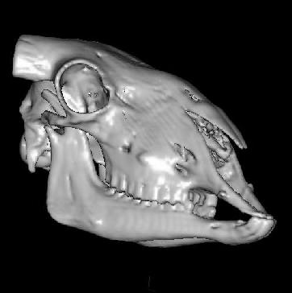
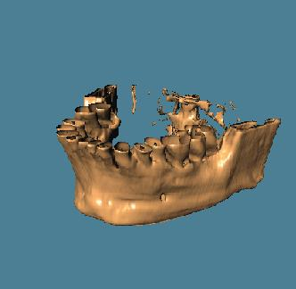
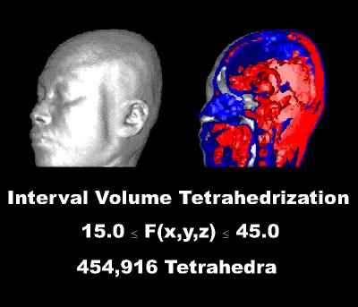

Les aplicacions en el camp de la medicina - diagnosi no invasiva, entrenament, planificació d'intervencions quirúrgiques, simulació d'intervencions i tractaments - es requereixen models3D de volum, molt complexes. Habitualment es demana una visualització realista amb elements simbòlics - per exemple el color dels objectes -. Veiem-ne alguns exemples:
|  |  |
|  |